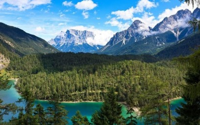
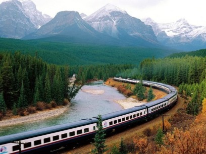

Zemljopis Kanade
 Oko 5/6 kanadskog teritorija obuhvaćaju nizine i pobrđa, koja se pružaju od gorja Appalachian i poluotoka Labradora na istoku do planinskih lanaca na zapadu. Reljef nižeg dijela Kanade nastao je u ledeno doba erozijom tla pa je zbog toga staro kamenje zaobljeno i golo te mjestimice pokriveno morenama (kamenjem koje nagomilavaju ledenjaci). Najstariji dio Kanade, tzv. Kanadski štit ili Laurentski štit. Središnji, a ujedno i najniži dio Štita potopljen je Hudsonovim zaljevom. Jugozapadno od Zaljeva nalaze se 600 - 700 m visoki ravnjaci (prerijske ravnice) koji se pružaju do podnožja Stjenjaka (Rocky Mountains). Najviši vrh Kanade, Mount Logan (5959 m), nalazi se u području granice s Aljaskom (SAD-om). Nepregledna Kanada ima raznolik reljef koji dijelimo na 7 osnovnih cjelina:
- Kordiljeri su lanac mladih nabranih planina čiji vrhovi dopiru do 4000 metara. Klimatski su nepovoljni i nema uvjeta za proizvodnju hrane pa su rijetko naseljeni.
- Istočno od Kordiljera su prostrani travnjaci, prerije, s plodnim tlom za uzgoj žitarica. Klima je stepska s oštrim dugim zimama i toplim ljetima s prodorima toplog zraka s juga. U Alberti su pronađeni izdašni izvori nafte i plina.
- Kanadski štit prekrivaju najstarije stijene svijeta koje su tijekom geološke povijesti Zemlje djelovanje
- m endogenih sila i egzogenih procesa zaravnjene. U tako starim stijenama ima mnogo ruda, površinom dominira crnogorična šuma koja se rasprostire u pojasu širokom 1500 km.
- Niska, šumovita i močvarna obala Hudsonova zaljeva rijetko je naseljena.
- Nizina rijeke St. Lawrence u kanadskim je okvirima malo područje, ali tu živi najviše stanovnika. To je gospodarsko središte s najvećom koncentracijom gradova. Klimatski je najpovoljnija za naseljavanje, a najčešće su bjelogorične šume breze i javora. Crveni javorov list amblem je na kanadskoj zastavi jer su te šume u jesen ostavljale snažan dojam na europske doseljenike.
- Apalači (Appalachian) su staro gromadno gorje obraslo bjelogoricom, a Kanadi pripada samo mali sjeverni dio.
Unutar polarnog kruga nalaze se arktički otoci koji su 10 mjeseci pod snijegom gdje temperature zimi padaju ispod -50°C. Naseljeni su Eskimima, a otkrivena su nalazišta nafte i plina. Reljef je u pleistocenu oblikovao ledeni pokrov, što se najbolje može vidjeti po brojnim jezerima koja je za sobom ostavio ledeni pokrov.